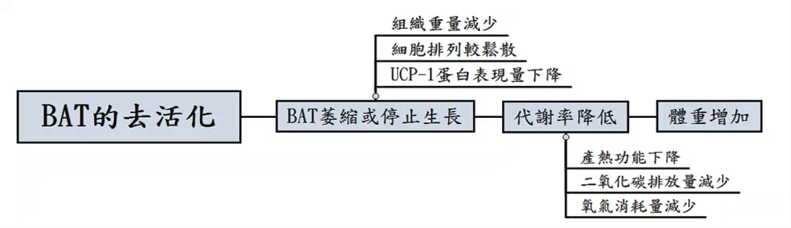

探究神經對於棕色脂肪組織產熱及代謝之影響

作者
朱紹綸
吳群明
李皓允
指導老師
童禕珊 老師
指導教授
張以承 教授
作品摘要
不同於白色脂肪組織（white adipose tissue, WAT）在動物體內負責儲存能量，棕色脂肪組織（brown adipose tissue, BAT）和非顫抖性產熱（non-shivering thermogenesis, NST）息息相關，文獻指出 BAT 的作用受到交感神經的調控。我們在小鼠的 BAT 附近找到了數條支配神經，嘗試將其剔除後，進行低溫試驗（cold test）以及測量其攝食產熱效應（diet-induced thermogenesis, DIT），藉由觀察體溫的變化，了解神經對於棕色脂肪組織產熱的影響，最後觀察切除 BAT周圍神經束老鼠的體重、組織（BAT）重量、UCP-1 蛋白含量、組織切片有何區別，進而探究其生理上之意義及臨床應用之可行性，我們在研究中發現，小鼠剔除神經後，棕色脂肪組織會有萎縮及失去功能的現象，進而影響其代謝狀況，最終導致體重上升。